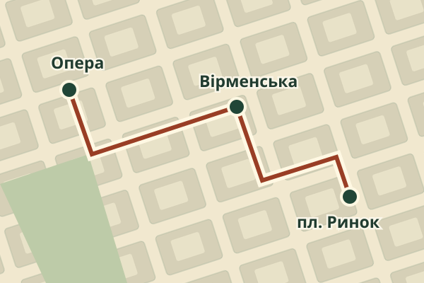

Оперний театр
Почніть на проспекті Свободи. Відійдіть від сходів на кілька кроків і подивіться на силует скульптур над фасадом.
Далі — через Театральну до Вірменської.
Прогулянка старим Львовом у три зупинки. Роздивіться скульптури над театром, зверніть на Вірменську й завершіть маршрут біля ратуші.
Почати прогулянку ↓
Почніть на проспекті Свободи. Відійдіть від сходів на кілька кроків і подивіться на силует скульптур над фасадом.
Далі — через Театральну до Вірменської.
На вузькій вулиці переведіть погляд з вітрин на верхні поверхи. Порівняйте обрамлення вікон двох сусідніх кам’яниць.
Далі — Краківською до площі Ринок.
Обійдіть ратушу й знайдіть чотири фонтани навколо неї. Виберіть один бік площі й порівняйте кольори фасадів.
Фініш — біля ратуші.